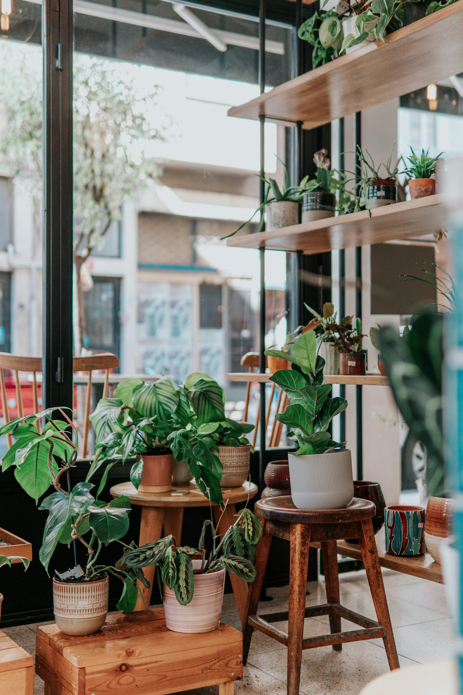

Indie Film Festival
A responsive website concept highlighting independent filmmakers, film screenings, and volunteer opportunities.
Technologies: HTML, CSS
Skills: Semantic HTML, CSS Grid, Flexbox, responsive layout, accessibility considerations.
A responsive website concept highlighting independent filmmakers, film screenings, and volunteer opportunities.
Technologies: HTML, CSS
Skills: Semantic HTML, CSS Grid, Flexbox, responsive layout, accessibility considerations.

A responsive website project where semantic HTML, CSS Grid, and Flexbox are utilized to support mobile-first design.
Technologies: HTML, CSS
Skills: Semantic HTML, CSS Grid, Flexbox, responsive layout, accessibility considerations.
A single-page website project built in CodePen, focused on semantic HTML and foundational accessibility principles to create a structured and accessible web experience.
Technologies: HTML, CodePen
Skills: Semantic HTML